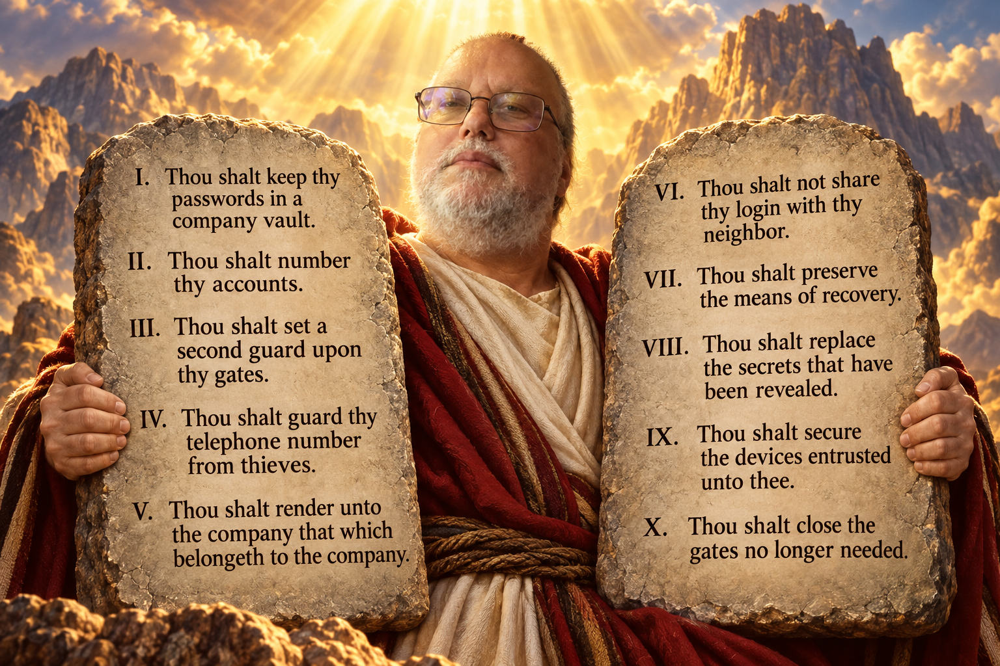

The Thomas Ten

Read the commandments
- Thou shalt keep thy passwords in a company vault.
- Thou shalt number thy accounts.
- Thou shalt set a second guard upon thy gates.
- Thou shalt guard thy telephone number from thieves.
- Thou shalt render unto the company that which belongeth to the company.
- Thou shalt not share thy login with thy neighbor.
- Thou shalt preserve the means of recovery.
- Thou shalt replace the secrets that have been revealed.
- Thou shalt secure the devices entrusted unto thee.
- Thou shalt close the gates no longer needed.